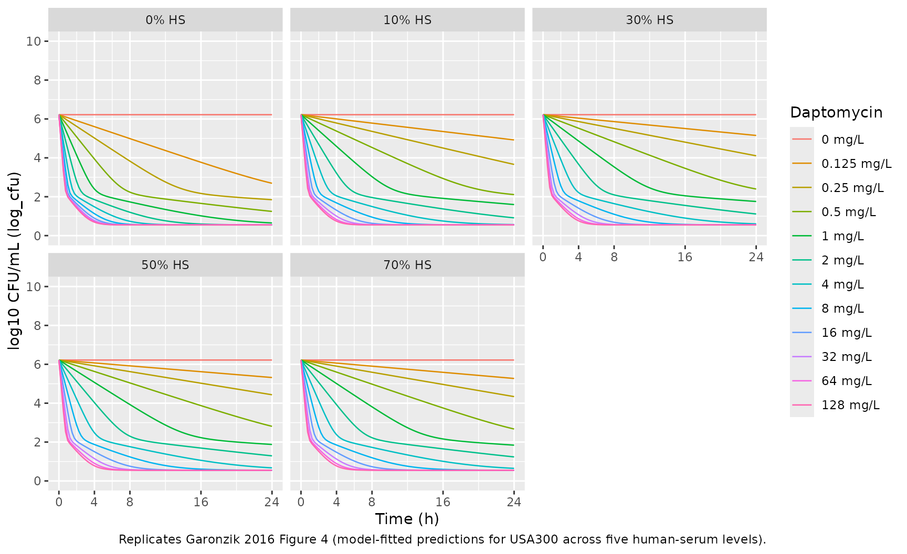
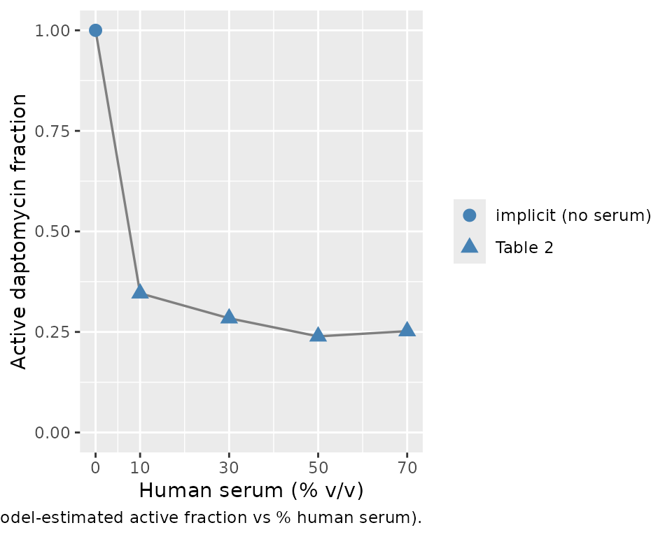

Daptomycin time-kill against MRSA (Garonzik 2016)
Source:vignettes/articles/Garonzik_2016_daptomycin.Rmd
Garonzik_2016_daptomycin.RmdModel and source
- Citation: Garonzik SM, Lenhard JR, Forrest A, Holden PN, Bulitta JB, Tsuji BT. Defining the active fraction of daptomycin against methicillin-resistant Staphylococcus aureus (MRSA) using a pharmacokinetic and pharmacodynamic approach. PLoS ONE. 2016;11(6):e0156131. doi:10.1371/journal.pone.0156131.
- Description: In vitro (Staphylococcus aureus USA300, methicillin-resistant CA-MRSA reference strain). Mechanism-based mathematical pharmacodynamic (MBM) model of daptomycin time-kill activity in supplemented Mueller-Hinton broth with 0%, 10%, 30%, 50%, or 70% v/v heat-inactivated human serum. The bacterial population is split into three subpopulations of decreasing daptomycin susceptibility (susceptible, intermediate, resistant), each described by two states (state 1 vegetative, state 2 replicating; six bacterial compartments total). Replication of state 2 cells back into state 1 is gated by a successful-replication probability (REP = 2 x Plateau, with Plateau saturating at a maximum CFU/mL CFUm), and the vegetative-to-replicating transition k12 is modulated by an exponential lag-phase term (Eq 3) and a saturable carrying-capacity term (Eq 7) parameterised by Imax_k12 and IC50_k12. Daptomycin acts on each subpopulation via two mechanisms: a Hill-type stimulation of the probability of death (STI; reduces successful replication via IREP = 1 - STI) and a Hill-type direct killing of bacteria (Kill); the relative balance of the two is the dominant pharmacodynamic feature, with SC50 (0.05 mg/L) much lower than KC50 (4.8 mg/L). The intermediate and resistant subpopulations share the same SC50 and KC50 but have reduced Smax and Kmax (Smax_r and Kmax_r fixed to 0) and the resistant subpopulation has a slower vegetative-to-replicating transition (FR_K12r = 0.0442). Protein binding by human serum is encoded as an ‘active fraction’ factive(HS) multiplying the total static daptomycin concentration to give an effective drug concentration DAP_EF; the active fraction takes five experimental levels (factive = 1 at 0% HS, then 0.346, 0.284, 0.239, 0.252 at 10%, 30%, 50%, 70% HS). The model is in-vitro PD only – there is no human PK component; daptomycin is dosed once at t = 0 into the dap compartment and is chemically stable in the medium for the 24-h experiment. Random effects (eta) are NOT present: the paper reports replicate-level experimental fits with additive plus small-count Poisson residual error on log10 CFU/mL.
- Article: https://doi.org/10.1371/journal.pone.0156131
Population
The packaged model was fit to a 24-hour in-vitro time-kill experiment using the methicillin-resistant Staphylococcus aureus (MRSA) reference strain USA300 (NRS 384, FRP3757; daptomycin MIC = 0.5 mg/L). Time-kill data were also collected for the vancomycin-intermediate strain Mu50 (NRS 4, HIP5836; daptomycin MIC = 1.0 mg/L), but the mechanism-based mathematical model (MBM) was fit to USA300 only – selected as the most common pulsed-field gel electrophoresis type in the USA (Garonzik 2016 Methods, “Mechanism Based Mathematical Pharmacodynamic Model”). Daptomycin concentrations were 0, 0.125, 0.25, 0.5, 1, 2, 4, 8, 16, 32, 64, 128 mg/L (and 256 mg/L per Figure 2 legend) applied as static concentrations in calcium-supplemented Mueller-Hinton broth (1.1-1.3 mmol/L Ca, 12.5 mg/L Mg) with heat-inactivated human serum at v/v ratios of 0%, 10%, 30%, 50%, or 70%. Starting inoculum was approximately 10^6 CFU/mL; viable counts were sampled at 0, 1, 2, 4, 8, and 24 h; limit of detection was 10^2 CFU/mL.
There is no human or animal cohort: this is an in-vitro PD model with
one experimental covariate (HS, the percentage of human
serum) and no subject-level demographics. Replicate-to-replicate
variability is captured only via the additive residual standard
deviation on log10 CFU/mL; the model carries no IIV / inter-experiment
etas. The complete population metadata is available programmatically via
readModelDb("Garonzik_2016_daptomycin")$population.
Source trace
The MBM couples six bacterial-population states – one vegetative
(state 1) and one replicating (state 2) state for each of three
subpopulations of decreasing daptomycin susceptibility (susceptible
s, intermediate i, resistant r) –
with a single static daptomycin solution compartment dap.
The published governing equations are Garonzik 2016 Equations 1-12
(pages 3-6). The load-bearing forms are:
Eq 2: DAP_EF = factive(%HS) * Total Daptomycin
Eq 3: Lag = 1 - exp(-(klag * t)^beta)
Eq 7: Growth(k12es) = Lag * k12 * (1 - Imax_k12 * CFU_total / (CFU_total + IC50_k12))
Eq 8: STI_s = Smax_s * DAP_EF / (DAP_EF + SC50)
Eq 9: IREP_s = 1 - STI_s
Eq 10: Kill_s = Kmax_s * DAP_EF / (DAP_EF + KC50)
Eq 11: dS1/dt = REP * k21 * S2 * IREP_s - k12es * S1 - Kill_s * S1
Eq 12: dS2/dt = -k21 * S2 + k12es * S1 - Kill_s * S2(equations for the intermediate and resistant subpopulations have the
same shape with subpopulation-specific Smax, Kmax, and FR_K12
multipliers). The REP = 2 x Plateau term in Eq 11 carries
the success probability of bacterial doubling, where
Plateau = 1 - CFU_total / (CFU_total + CFU_M) (Eq 5)
saturates at the maximum achievable density CFU_M = 10^9.20
CFU/mL. The full per-parameter source trace is recorded as in-file
comments next to each ini() entry in
inst/modeldb/specificDrugs/Garonzik_2016_daptomycin.R. The
table below collects them in one place. All numeric values come from
Garonzik 2016 Table 2.
| Parameter (paper symbol) | File name | Value | Units | Source |
|---|---|---|---|---|
| factive (10% HS) | lfact_hs10 |
0.346 | (unitless) | Table 2 |
| factive (30% HS) | lfact_hs30 |
0.284 | (unitless) | Table 2 |
| factive (50% HS) | lfact_hs50 |
0.239 | (unitless) | Table 2 |
| factive (70% HS) | lfact_hs70 |
0.252 | (unitless) | Table 2 |
| factive (0% HS) | (not estimated) | 1.000 | (unitless) | implicit (no serum) |
| Log10CFU0 | cfu0_log10 |
6.22 | log10 CFU/mL | Table 2 |
| Log10 FR_I | fri_log10 |
-3.65 | log10 (fraction of CFU0) | Table 2 |
| Log10 FR_r | frr_log10 |
-5.67 | log10 (fraction of CFU0) | Table 2 |
| MTT_lag | lmtt_lag |
75.5 | h | Table 2 |
| beta (FIXED) | beta_lag |
10.0 | (unitless) | Table 2 |
| MTT_K12 | lmtt_k12 |
20.2 | h | Table 2 |
| Log10 IC50_K12 | ic50_k12_log10 |
7.81 | log10 CFU/mL | Table 2 |
| Imax_K12 (FIXED) | imax_k12 |
0.99 | (unitless) | Table 2 |
| K21 (FIXED) | lk21 |
50.0 | 1/h | Table 2 |
| Log10 CFU_M | cfum_log10 |
9.20 | log10 CFU/mL | Table 2 |
| FR_K12i (FIXED) | fr_k12i |
1.00 | (unitless) | Table 2 |
| FR_K12r | fr_k12r |
0.0442 | (unitless) | Table 2 |
| Smax_s (FIXED) | smax_s |
0.99 | (unitless) | Table 2 (footnote: “estimated very close to 1; fixed to 0.99”) |
| Smax_i | smax_i |
0.515 | (unitless) | Table 2 |
| Smax_r (FIXED) | smax_r |
0 | (unitless) | Table 2 (footnote: “estimated close to zero; fixed to 0”) |
| SC50_s | lsc50 |
0.0468 | mg/L | Table 2 |
| Kmax_s | lkmax_s |
14.0 | 1/h | Table 2 |
| Kmax_i | lkmax_i |
1.45 | 1/h | Table 2 |
| Kmax_r (FIXED) | kmax_r |
0 | 1/h | Table 2 (footnote: “estimated close to zero; fixed to 0”) |
| KC50_s | lkc50 |
4.81 | mg/L | Table 2 |
| epsilon_CFU | addSd |
0.558 | log10 CFU/mL | Table 2 |
| epsilon_Pois (FIXED) | (not included) | 1.00 | (unitless) | Table 2 (Poisson term; deliberate simplification, see deviations) |
| epsilon_Add (FIXED) | (not included) | 0.250 | log10 CFU/mL | Table 2 (extra additive at counts < 5; deliberate simplification) |
Compartment and observation conventions (see the Assumptions and deviations section for justification of the non-canonical names):
| Compartment | Units | Meaning |
|---|---|---|
dap |
mg/L | static daptomycin bath concentration (no degradation) |
bact_susceptible1 |
CFU/mL | susceptible subpopulation, state 1 (vegetative) |
bact_susceptible2 |
CFU/mL | susceptible subpopulation, state 2 (replicating) |
bact_intermediate1 |
CFU/mL | intermediate subpopulation, state 1 (vegetative) |
bact_intermediate2 |
CFU/mL | intermediate subpopulation, state 2 (replicating) |
bact_resistant1 |
CFU/mL | resistant subpopulation, state 1 (vegetative) |
bact_resistant2 |
CFU/mL | resistant subpopulation, state 2 (replicating) |
Cc |
log10 CFU/mL | observation: log10 of total bacterial concentration |
Helper: build a time-kill scenario
The published experiment used a static daptomycin concentration
applied at t = 0 and a single human-serum percentage per experiment. The
helper below builds an et() event table for an arbitrary
(DAP, HS) combination. DAP is inserted as a bolus event into the
dap compartment with amt interpreted as the
initial bath concentration in mg/L; HS is carried as a constant
per-subject covariate.
mod <- readModelDb("Garonzik_2016_daptomycin")
build_scenario <- function(dap_mgL, hs_pct,
times = seq(0, 24, by = 0.25)) {
ev <- et(times)
if (dap_mgL > 0) ev <- et(ev, amt = dap_mgL, cmt = "dap", time = 0)
ev$HS <- hs_pct
out <- as.data.frame(rxode2::rxSolve(mod, ev))
out$dap_init <- dap_mgL
out$hs_pct <- hs_pct
out
}Replicate Figure 4 panels (typical-value)
Garonzik 2016 Figure 4 shows model-fitted predictions (solid lines) overlaid on observed time-kill data (symbols) for daptomycin against USA300 at five human-serum levels (panels A-E for 0%, 10%, 30%, 50%, 70%). We reproduce the model-fitted predictions across a representative set of daptomycin concentrations.
dap_levels <- c(0, 0.125, 0.25, 0.5, 1, 2, 4, 8, 16, 32, 64, 128)
hs_levels <- c(0, 10, 30, 50, 70)
grid <- expand.grid(dap = dap_levels, hs = hs_levels, KEEP.OUT.ATTRS = FALSE)
panels <- Map(build_scenario, grid$dap, grid$hs) |> bind_rows()
panels <- panels |>
mutate(
hs_label = factor(paste0(hs_pct, "% HS"),
levels = paste0(hs_levels, "% HS")),
dap_label = factor(sprintf("%.3g mg/L", dap_init),
levels = sprintf("%.3g mg/L", dap_levels))
)
ggplot(panels, aes(time, Cc, group = dap_init, color = dap_label)) +
geom_line(linewidth = 0.45) +
facet_wrap(~ hs_label, ncol = 3) +
scale_y_continuous(limits = c(0, 10), breaks = seq(0, 10, 2)) +
scale_x_continuous(breaks = c(0, 4, 8, 16, 24)) +
labs(x = "Time (h)", y = "log10 CFU/mL (Cc)",
color = "Daptomycin",
caption = "Replicates Garonzik 2016 Figure 4 (model-fitted predictions for USA300 across five human-serum levels).") +
theme(legend.position = "right")
Active-fraction recovery (Figure 5)
Garonzik 2016 Figure 5 plots the estimated active fraction against the percentage of human serum, demonstrating the plateau effect at high serum exposure. We round-trip the four estimated values plus the implicit 1.0 at 0% HS:
factive_tbl <- tibble(
hs_pct = c(0, 10, 30, 50, 70),
factive = c(1.000, 0.346, 0.284, 0.239, 0.252),
source = c("implicit (no serum)", rep("Table 2", 4))
)
ggplot(factive_tbl, aes(hs_pct, factive)) +
geom_line(linewidth = 0.6, color = "grey50") +
geom_point(aes(shape = source), size = 3, color = "steelblue") +
scale_y_continuous(limits = c(0, 1), breaks = seq(0, 1, 0.25)) +
scale_x_continuous(breaks = c(0, 10, 30, 50, 70)) +
labs(x = "Human serum (% v/v)", y = "Active daptomycin fraction",
shape = NULL,
caption = "Replicates Garonzik 2016 Figure 5 (model-estimated active fraction vs % human serum).")
The active fraction drops sharply between 0 and 30% HS and then plateaus, consistent with the paper’s Results / Discussion (“at high concentrations of human serum, the active fraction value attains a plateau”). The mild non-monotonicity (factive(70%) = 0.252 slightly above factive(50%) = 0.239) is the published Table 2 estimate; the paper attributes the apparent floor to a saturation of daptomycin / albumin interaction at high serum concentrations.
Key qualitative checks
Growth control. With no drug applied
(dap_init = 0), CFU_total must climb from
10^cfu0_log10 = 10^6.22 through the lag phase and approach
the plateau CFU_M = 10^9.20. The growth control is
identical across HS levels because human serum was not shown to affect
bacterial growth rate (Garonzik 2016 Results, last paragraph of
Mechanism based modeling).
gc <- panels |>
filter(dap_init == 0, time %in% c(0, 4, 8, 24)) |>
select(hs_label, time, Cc)
gc |>
pivot_wider(names_from = time, values_from = Cc,
names_prefix = "Cc_t") |>
knitr::kable(digits = 3,
caption = "Growth-control (no daptomycin) log10 CFU/mL at four times across the five HS levels.")| hs_label | Cc_t0 | Cc_t4 | Cc_t8 | Cc_t24 |
|---|---|---|---|---|
| 0% HS | 6.22 | 6.22 | 6.22 | 6.22 |
| 10% HS | 6.22 | 6.22 | 6.22 | 6.22 |
| 30% HS | 6.22 | 6.22 | 6.22 | 6.22 |
| 50% HS | 6.22 | 6.22 | 6.22 | 6.22 |
| 70% HS | 6.22 | 6.22 | 6.22 | 6.22 |
The 24-hour growth-control values converge to ~9.20 (paper
Log10 CFU_M = 9.20), matching Figure 4 panel A (top
growth-control curve, open diamonds) which saturates at ~9 log10
CFU/mL.
Active fraction reduces effective concentration. At a single daptomycin level (4 mg/L), increasing HS reduces DAP_EF in proportion to factive(HS). Effective concentrations are:
panels |>
filter(dap_init == 4, time == 0) |>
transmute(hs_label, dap_init, factive_check = factive,
dap_eff_check = dap_eff) |>
knitr::kable(digits = 4,
caption = "Active fraction and effective daptomycin concentration at 4 mg/L total daptomycin, per HS level.")| hs_label | dap_init | factive_check | dap_eff_check |
|---|---|---|---|
| 0% HS | 4 | 1.000 | 4.000 |
| 10% HS | 4 | 0.346 | 1.384 |
| 30% HS | 4 | 0.284 | 1.136 |
| 50% HS | 4 | 0.239 | 0.956 |
| 70% HS | 4 | 0.252 | 1.008 |
Resistant subpopulation survives. Because Smax_r and
Kmax_r are both fixed at zero, daptomycin has no direct effect on the
resistant subpopulation. At 24 h after a bactericidal regimen (e.g., 4
mg/L at 0% HS), the residual CFU_total is dominated by
bact_resistant1 + bact_resistant2:
res <- panels |>
filter(dap_init == 4, hs_pct == 0, time == 24) |>
select(time, cfu_total, bact_susceptible1, bact_susceptible2, bact_intermediate1, bact_intermediate2, bact_resistant1, bact_resistant2)
res |> knitr::kable(digits = 3,
caption = "Compartment-level state at 24 h after 4 mg/L daptomycin at 0% HS. The residual is essentially the resistant subpopulation; susceptible and intermediate are below the limit of detection.")| time | cfu_total | bact_susceptible1 | bact_susceptible2 | bact_intermediate1 | bact_intermediate2 | bact_resistant1 | bact_resistant2 |
|---|---|---|---|---|---|---|---|
| 24 | 3.548 | 0 | 0 | 0 | 0 | 3.548 | 0 |
Bactericidal threshold. Garonzik 2016 reports that bactericidal activity (>=3.0 log10 CFU/mL reduction from inoculum, i.e., Cc <= 3.22) is reached by 24 h for all DAP >= 2 mg/L irrespective of HS (Results, Time-kill experiments). Check the 24-hour values across the grid:
panels |>
filter(dap_init %in% c(0.25, 0.5, 1, 2, 4, 8), time == 24) |>
select(hs_label, dap_label, Cc) |>
pivot_wider(names_from = dap_label, values_from = Cc) |>
knitr::kable(digits = 2,
caption = "log10 CFU/mL at 24 h across a daptomycin x HS grid. Compare against Figure 4 right-edge endpoints; entries <= 3.22 satisfy the 99.9% bactericidal threshold.")| hs_label | 0.25 mg/L | 0.5 mg/L | 1 mg/L | 2 mg/L | 4 mg/L | 8 mg/L |
|---|---|---|---|---|---|---|
| 0% HS | 1.85 | 1.24 | 0.65 | 0.55 | 0.55 | 0.55 |
| 10% HS | 3.66 | 2.11 | 1.60 | 0.91 | 0.57 | 0.55 |
| 30% HS | 4.11 | 2.40 | 1.76 | 1.11 | 0.61 | 0.55 |
| 50% HS | 4.43 | 2.81 | 1.88 | 1.29 | 0.67 | 0.55 |
| 70% HS | 4.34 | 2.67 | 1.84 | 1.24 | 0.65 | 0.55 |
Comparison against published Hill-type parameters (Table 1)
Garonzik 2016 Table 1 reports a separate Hill-type concentration-effect fit (Eq 1B, log-ratio area vs daptomycin C / MIC) for USA300 at each HS level. The MBM model and the log-ratio Hill fit are independent analyses of the same time-kill data, so the MBM round-trip at 24 h should be qualitatively consistent with Table 1’s shift towards lower Emax and higher EC50 with increasing HS. The Hill-fit numbers themselves are not parameters of this packaged model and are reproduced here purely for reference:
| Human Serum | E_max | EC50 (xMIC) | H |
|---|---|---|---|
| 0% | 4.63 | 0.189 | 6.19 |
| 10% | 4.12 | 0.354 | 7.17 |
| 30% | 4.22 | 0.694 | 5.29 |
| 50% | 4.20 | 0.680 | 4.07 |
| 70% | 3.51 | 0.905 | 10 |
Assumptions and deviations
-
Non-canonical compartment names (
dap,bact_susceptible1,bact_susceptible2,bact_intermediate1,bact_intermediate2,bact_resistant1,bact_resistant2). The nlmixr2lib canonical compartment register (R/conventions.R::canonicalCompartments) targets popPK / PK-PD models for systemic drug disposition; the bacterial-subpopulation state names here have no analog in that register. The names are retained from Garonzik 2016 (paper Methods, “Model for Bacterial Life Cycle”) to keep the source trace direct.checkModelConventions()emits compartment-name warnings; they are expected and documented here, matching the precedent set byWicha_2017_linezolid_meropenem_vancomycin.RandSadouki_2025_meropenem_gentamicin_ciprofloxacin.R. -
HS covariate not in the canonical register.
HSis an in-vitro experimental indicator (the percent v/v of human serum supplementing the broth) – not a clinical-trial patient covariate. The canonical register atinst/references/covariate-columns.mdis for human pop-PK covariates and does not apply. The same precedent is set byMER_PRESENT,Cgen, andLOWINOCinSadouki_2025_meropenem_gentamicin_ciprofloxacin.R. -
HS treated as a discrete five-level factor, not a continuous
variable. factive(HS) is encoded as five fixed estimates – one
per experimental HS level (0%, 10%, 30%, 50%, 70%). HS values outside
this set yield
factive = 0inside the model (none of the indicator expressions fire), which is a deliberately conspicuous failure rather than a silent interpolation. The paper plots an apparent continuous curve in Figure 5 but only estimates four points; interpolation is the user’s choice and is left out of the packaged model. -
Single observation
Cccarries log10 CFU/mL, not a drug concentration. nlmixr2lib’s single-output convention names the observationCc; the underlying quantity here is log10 of total bacterial CFU/mL. Theunits$concentrationmetadata makes this explicit.checkModelConventions()warns thatunits$dosing(mg/L) and the observation numerator (log10 CFU) appear dimensionally incompatible – this is intentional: dosing is an in-vitro bath concentration, observation is a bacterial count. -
Daptomycin compartment holds bath concentration, not
mass. The
dapcompartment is initialised via a bolus dosing event attime = 0whoseamtfield is interpreted as the initial bath concentration in mg/L. The state subsequently evolves according tod/dt(dap) <- 0(chemically stable in the medium over the 24-h experiment per Methods). To re-use the model with time-varying daptomycin (e.g., to couple a separately built popPK model), replace the static dose with time-varyingdapinputs. -
Bacterial counts on linear scale internally. Table
2 reports CFU0, FR_I, FR_R, CFU_M, and IC50_K12 in log10 units; the ODEs
operate on linear CFU/mL. The model converts in
model():cfu0 <- 10^cfu0_log10,cfu_m <- 10^cfum_log10, etc. A1e-6floor is added inside thelog10(...)observation to avoidlog10(0)when all bacterial states are driven to zero by combined high-DAP + low-HS regimens. -
Residual error simplified to the dominant additive
term. Garonzik 2016 Table 2 reports three residual variability
components: an additive term on log10 CFU/mL
(
epsilon_CFU = 0.558, estimated), a Poisson-style term (epsilon_Pois = 1.00, FIXED), and an additional additive term active when counts fall below 5 colonies (epsilon_Add = 0.250, FIXED). The packaged model carries only the dominant additiveepsilon_CFUviaaddSd; the Poisson and small-count additive components are omitted. The simplification is acceptable for typical-value simulation well above the limit of detection (~log10 CFU = 2) but understates noise near the LOD. The Bulitta-style combined residual structure could be added if a future user needs precise low-count behaviour, but it is not a standard nlmixr2 residual form and is not portable across estimation backends. - No IIV / random effects. Garonzik 2016 reports a typical-value fit only; no inter-replicate or inter-subpopulation etas. Reported relative standard errors (Table 2 “Estimate (SE%)”) quantify parameter uncertainty, not between-subject variability. The full variance-covariance matrix is not published, so this vignette plots typical-value trajectories only.
- MBM was fit to USA300 only. Mu50 (VISA, daptomycin MIC = 1.0 mg/L) time-kill data were collected and Hill-type parameters were reported (Table 1, right half) but the MBM (Table 2) was fit to USA300 only. This packaged model is therefore strain-specific to USA300; reusing it for Mu50 would understate the killing concentrations because Mu50 has twice the MIC of USA300.
-
Out-of-scope: clinical (in-vivo) PK linkage.
Garonzik 2016 is an in-vitro pharmacodynamic paper; there is no human PK
model in this publication. A pharmacist or clinician wanting to simulate
dosing regimens in humans must couple the present PD model to a separate
published daptomycin popPK model and route time-varying plasma
daptomycin concentrations into the
dapcompartment. The “active fraction” concept in this paper supersedes the conventional “free fraction” assumption when scaling to human serum concentrations (Discussion, page 8). -
factive(0%)was not estimated. The paper estimates factive at the four serum-containing levels (10%, 30%, 50%, 70%) and treats the 0% case as the unbound reference (factive = 1 by construction, no protein binding). The packaged model encodes this by forcingfactive = 1whenHS = 0; the value is not aini()parameter and is not tabulated in Table 2.